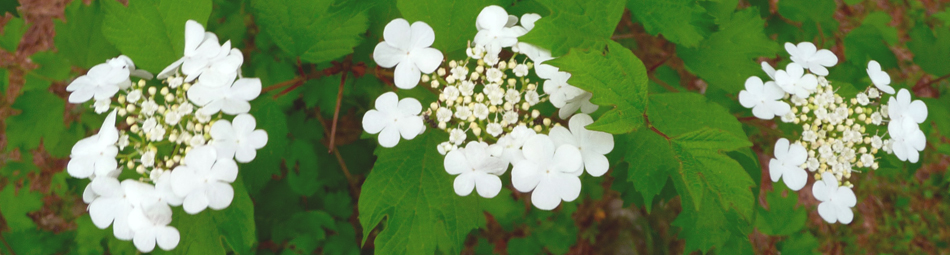
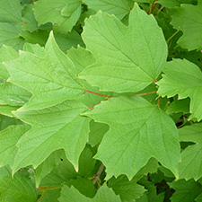
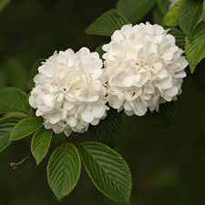
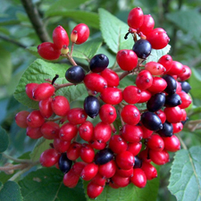

All About Viburnums
Overview
Viburnums have long been one of the most popular flowering landscape shrubs. There are over 150 species of Viburnum. You can find a variety to suit any garden need: wet or dry, sun or shade, natural or formal, shrub or tree, native or exotic, USDA Zones 2-9. Bloom times span early spring through June and are followed by attractive fruit and outstanding fall foliage.
Cultural Requirements
Most viburnums prefer full sun but will adjust to partial shade. They like a moderately fertile soil with a pH between 5.6 - 6.6., although many do just fine in alkaline soils. In general, viburnums are not terrible particular about where they grow.
That few pests will bother viburnums is one of the reasons they have become so popular in the landscape. Recently the Viburnum Leaf Beetle (VLB) has been introduced into North America trough Canada and has begun making its way south.
Foliage
There is no singular viburnum foliage. It can be rounded, lance-shape or toothed, smooth, velvety or rough. There are some evergreen and semi-evergreen varieties and many deciduous varieties with outstanding fall color.
Most viburnum bushes are deciduous, which means they will drop their leaves each fall. Their growth rate should increase after the first year. Most shrubs and perennials will not grow significantly the first year they are planted; at least there won't be much visible growth.
Flowers
Most viburnums have either white or pinkish flowers which are sometimes fragrant. The flowers themselves come in three major types: 1) Flat clusters of florets, 2) Flat umbels outlined with larger flowers, resembling lacecap hydrangeas and 3) Dome-shaped, snowball like clusters.
The fragrant varieties that are most familiar in the landscape are native to Asia.
Most viburnums flower in spring. The sometimes-fragrant flowers range from white and cream to pink-flushed or wholly pink. They are borne in terminal or axillary panicles, clusters, corymbs, or cymes, which are often spherical or domed. Some species have blooms similar to the flattened heads of lacecap hydrangeas.
Fruit
Almost all viburnums produce attractive clusters of drupes type fruits which are popular with birds, wildlife and humans. However, most Viburnums are not self-pollinating and will require another variety to cross-pollinate with and yield fruit. Read more on Asian and Evergreen Viburnums and Native North American varieties.
Many species bear ornamental fruits in late summer or fall. They are usually spherical or ovoid and may be red, yellow, blue, or black.